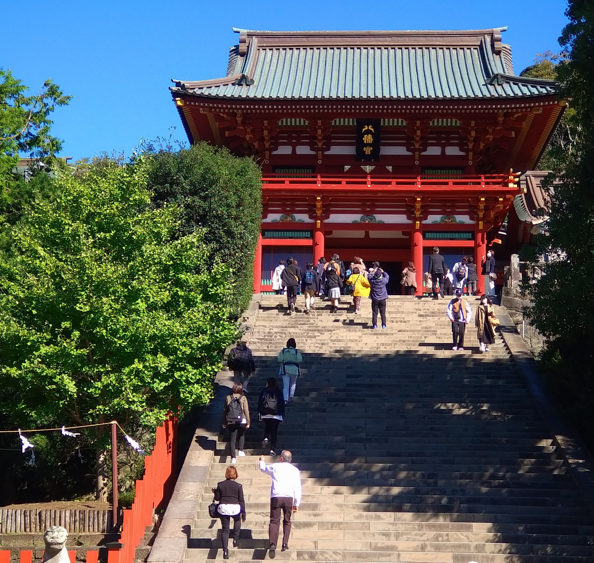
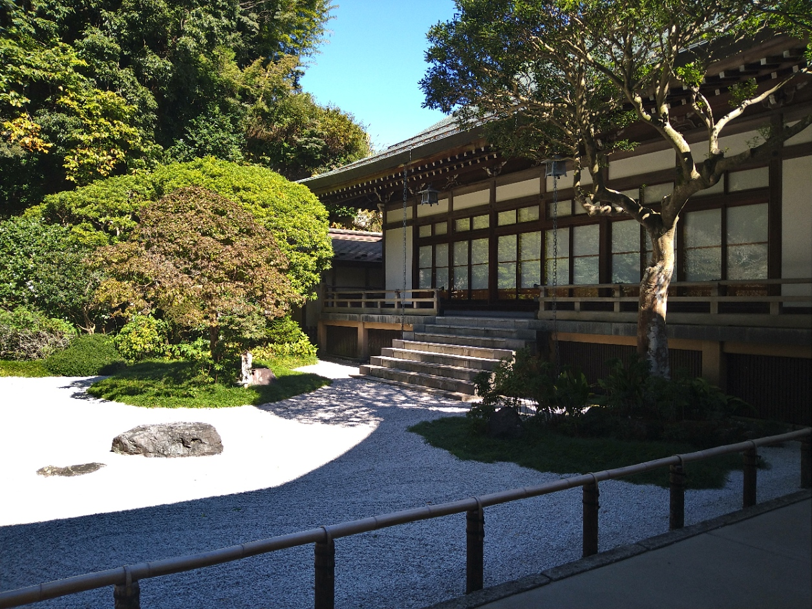
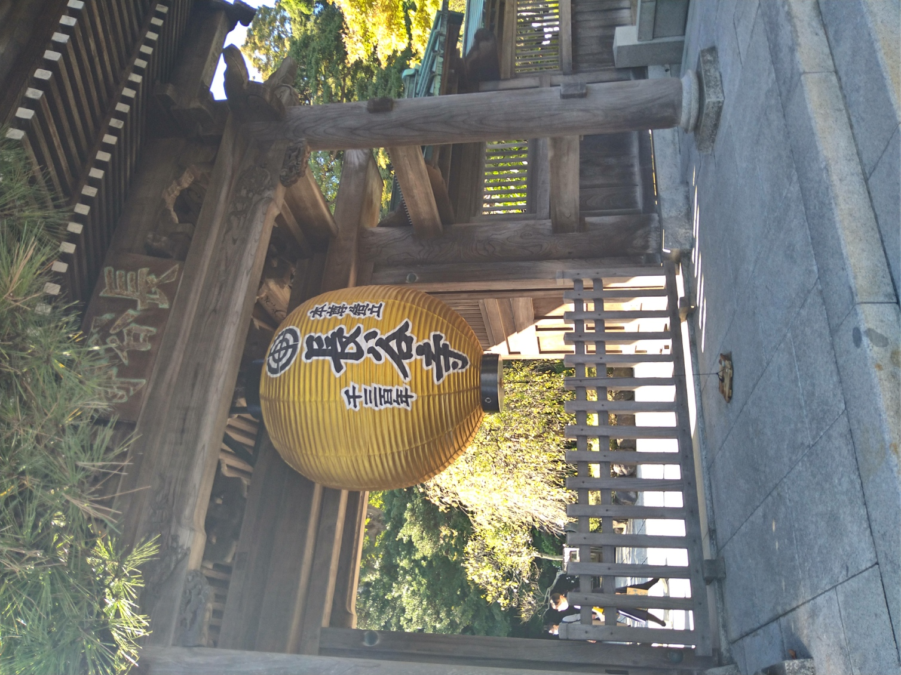
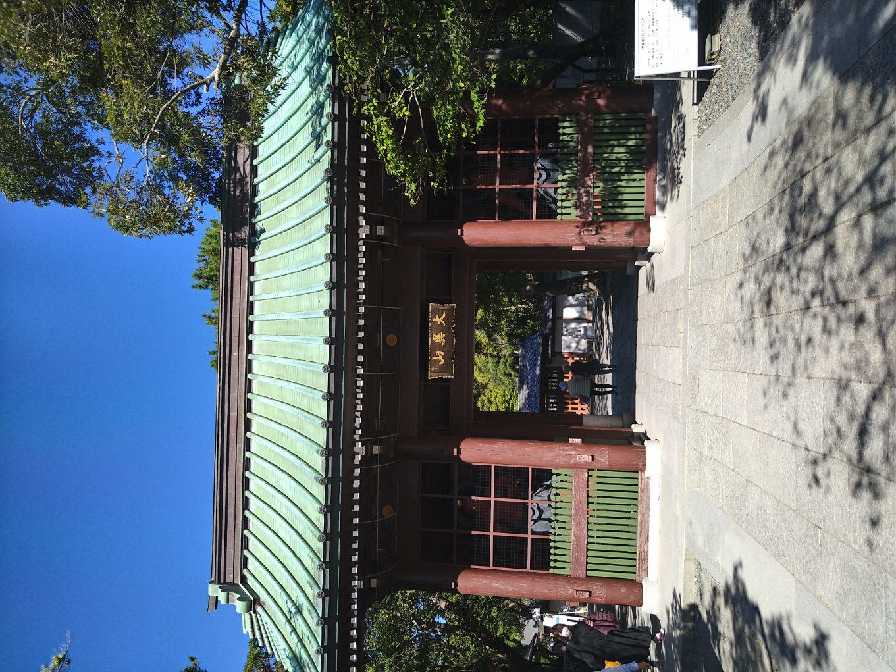
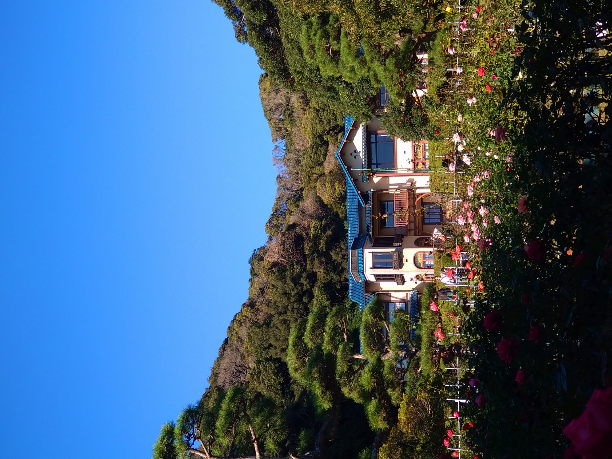
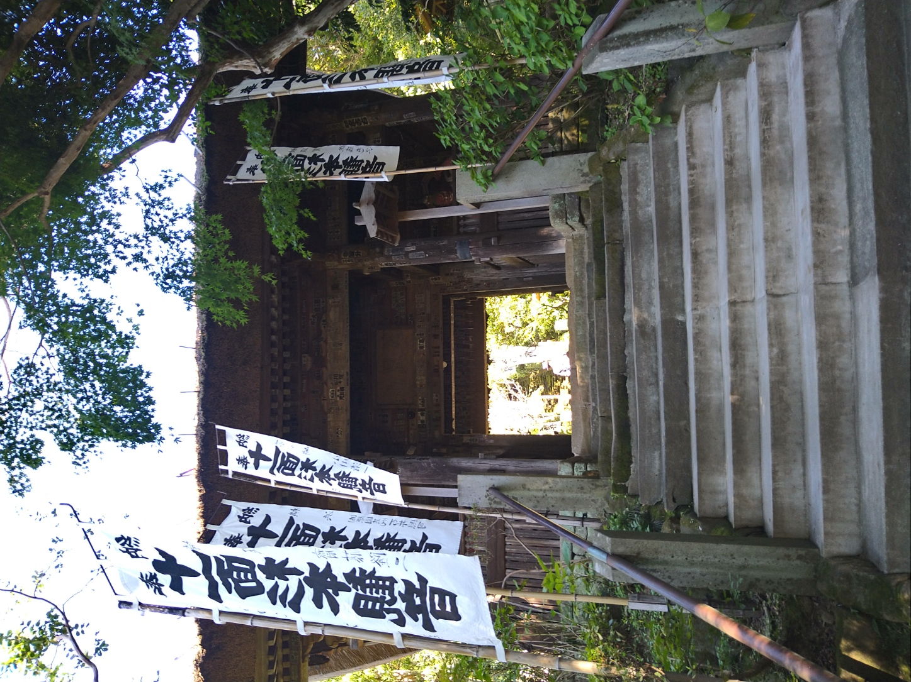

more»
- 鶴ケ岡八幡宮
- 鶴ケ岡八幡宮です。鶴ケ岡八幡宮です。鶴ケ岡八幡宮です。鶴ケ岡八幡宮です。鶴ケ岡八幡宮です。鶴ケ岡八幡宮です。鶴ケ岡八幡宮です。鶴ケ岡八幡宮です。鶴ケ岡八幡宮です。鶴ケ岡八幡宮です。鶴ケ岡八幡宮です。鶴ケ岡八幡宮です。

more»
- 報国寺
- 報国寺です。報国寺です。報国寺です。報国寺です。報国寺です。報国寺です。報国寺です。報国寺です。報国寺です。報国寺です。報国寺です。報国寺です。報国寺です。報国寺です。報国寺です。報国寺です。報国寺です。報国寺です。

more»
- 長谷寺
- 長谷寺です。長谷寺です。長谷寺です。長谷寺です。長谷寺です。長谷寺です。長谷寺です。長谷寺です。長谷寺です。長谷寺です。長谷寺です。長谷寺です。長谷寺です。長谷寺です。長谷寺です。長谷寺です。長谷寺です。長谷寺です。

鎌倉編

more»
- 高徳院
- 高徳院です。高徳院です。高徳院です。高徳院です。高徳院です。高徳院です。高徳院です。高徳院です。高徳院です。高徳院です。高徳院です。高徳院です。高徳院です。高徳院です。高徳院です。高徳院です。高徳院です。高徳院です。

more»
- 鎌倉文学館
- 鎌倉文学館です。鎌倉文学館です。鎌倉文学館です。鎌倉文学館です。鎌倉文学館です。鎌倉文学館です。鎌倉文学館です。鎌倉文学館です。鎌倉文学館です。鎌倉文学館です。鎌倉文学館です。鎌倉文学館です。鎌倉文学館です。

more»
- 杉本寺
- 杉本寺です。杉本寺です。杉本寺です。杉本寺です。杉本寺です。杉本寺です。杉本寺です。杉本寺です。杉本寺です。杉本寺です。杉本寺です。杉本寺です。杉本寺です。杉本寺です。杉本寺です。杉本寺です。杉本寺です。杉本寺です。